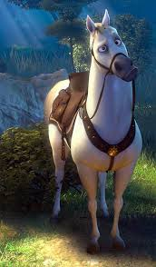

About Rupanzel from the movie Tangled
Tangled is a American computer-animated ,musical fantasy film produced by Walt Disney Studios .The film is telling the story of the long lost princess Rupanzel, who has a long magical hair and was kidnapped as an infant by Gothel , imprisoning the princess in an isolated tower for eighteen years while posing as her mother to exploit her powers. Rupanzel, yearns to leave her secluded tower for an adventure. Against her stepmother's wishes , she accepts the aid of a handsome intruder, Flynn Rider , to take her out into the world which she has never seen.
Rupanzel's Characteristics
- Rupanzel is a young princess with spirited,lively personality and independence.
- She wants to escape her tower with the help of the thief Flynn Rider
- She wants to learn more about the lights and pursue her dream of exploring the outside world.
Rupanzel's friends
Rupanzel has some great friends who help her to escape from her evil mother Gothel. Pascal is one of her best friends when she was alone in the tower.

The villan of this story is Gothel .She posed as Rupanzel's loving ,albeit overprotective mother with a mission to protect her daughter from the cruelty of the outside world.